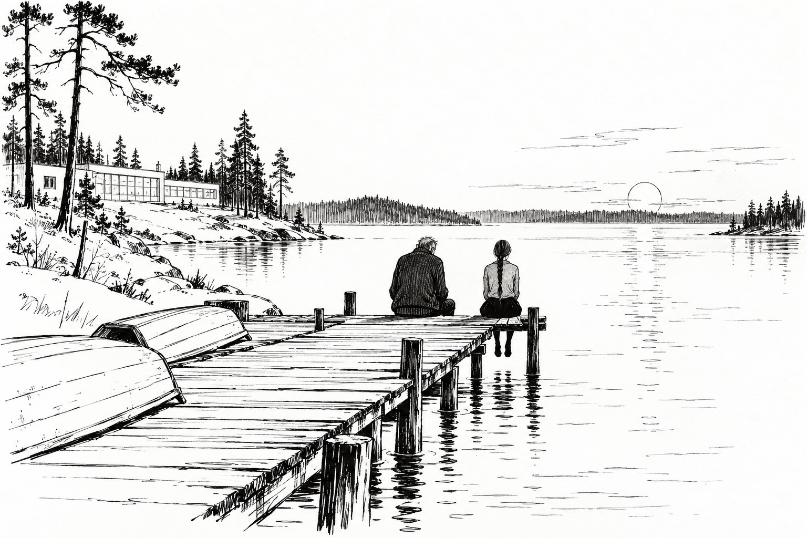

Призвание

Глава первая.
Комиссия, в которой состоял Ветлугин, собиралась раз в полгода и ничего не решала. Это было её главное достоинство. Её придумали лет двадцать назад для тех случаев, когда одно хорошее правило упирается в другое и людям нужно, чтобы кто-нибудь посторонний просто их выслушал. Полномочий у неё не было никаких. У неё было право задать вопрос и быть выслушанной, и за двадцать лет оказалось, что этого почти всегда достаточно.
Письмо пришло в середине мая. Писал председатель комиссии, старик Хансен, который всю жизнь проработал в статистике и считал, что любую вещь на свете можно измерить, если найти подходящую единицу. На этот раз единицы он не нашёл, и это чувствовалось в каждой строчке.
«Иван, — писал Хансен. — У нас случай, для которого я не знаю ни названия, ни порядка. Выпускница интерната отказалась от рекомендации своего Учителя. Вежливо, письменно и окончательно. Я проверил: за те сто двадцать лет, что существуют рекомендации, это первый случай. Бывало, что человек потом, через десять лет, менял профессию. Но чтобы сразу, на выпуске, сказать нет, такого не было. Правил на этот счёт нет, потому что рекомендация — это совет, а совета нельзя нарушить. Но Учитель написал нам, и написал так, что я понял: ему плохо. Видимо, надо просто поговорить. Я подумал о вас, потому что Учитель в письме назвал вас».
Учителем был Сеня Гуляев.
⁂
Интернат за двенадцать лет почти не изменился. Те же низкие светлые корпуса, то же длинное узкое озеро, тот же причал с перевёрнутыми лодками. Сосны стали выше, и кибер-садовник был другой, новой модели, потише, и за ним так же с серьёзным видом ходили малыши и разоряли его аккуратные кучки. Был конец мая, и всё цвело сразу, торопясь, как цветёт на севере, когда знает, что лето короткое.
Гуляев ждал на посадочной площадке, как тогда. Он совсем поседел, стал ещё сутулее, и на носу у него появились очки, старомодные, в тонкой оправе. Очки были ему не нужны, Ветлугин это знал. Сеня надевал их для малышей, которым нравилось, что у Учителя есть очки и что их можно померить.
— Я не звал тебя, — сказал он вместо приветствия.
— Знаю. Ты написал Хансену и назвал моё имя.
— Я написал, что знаю одного члена вашей комиссии и что он человек порядочный. Это не одно и то же. — Гуляев снял очки и потёр переносицу. — Впрочем, хорошо, что ты. Я рад.
Он действительно был рад, и видно было, что стыдится этой радости, и Ветлугин подумал, что за двенадцать лет они виделись раз пять, не больше, и все пять раз по делу.
— Он пишет, что тебе плохо, — сказал Ветлугин.
— Хансен преувеличивает. Мне не плохо. Я не понимаю. Это другое.
⁂
Они сидели в той же маленькой комнате, заваленной детскими поделками и деталями приборов, только поделки были другие. Гуляев рассказывал, а Ветлугин слушал.
Ася Корнилова пришла в его группу девятилетней. Тихая, светлая, с длинной косой, которую она так и не стригла все восемь лет. Училась хорошо, но не блестяще. Никаких особых способностей в математике, в музыке, в технике. Одна способность у неё была, и Гуляев заметил её на второй неделе.
— Она видит, кому плохо, — сказал он. — Не догадывается, а видит. Раньше, чем тот сам понял. В девять лет она подходила к мальчишке, который весь день смеялся и бегал, садилась рядом и ничего не говорила, а через пять минут он рыдал у неё на плече, и выяснялось, что у него неделю назад умер дед, и он никому не сказал. А она знала. И так всё время, Ваня. К ней ходит плакать полинтерната. Малыши, старшие. Однажды пришёл мой коллега, взрослый Учитель, сорок лет стажа. Просидел с ней на причале час. Потом пришёл ко мне и сказал: «Сеня, ты знаешь, кто у тебя растёт?»
Он помолчал.
— Ты же знаешь, что такое Учитель, Ваня. Это не профессия, ей нельзя научиться. Вся наша теория воспитания держится на том, чтобы найти в человеке этот талант. Мы ищем его всю жизнь. Я за двадцать с лишним лет дал три такие рекомендации, и две из них, честно говоря, на вырост. А тут не на вырост. Тут такое, что я сам рядом с ней подмастерье. И она говорит нет.
— А чего она хочет?
Гуляев передвинул на столе какую-то деталь, потом другую.
— Метеостанцию, — сказал он. — На мысу за Полярным кругом. Там зимуют вдвоём. Двое человек на сто километров, Ваня. Она уже написала туда, и её берут. Причину она не называет. Она сказала мне: «Я знаю, что вы правы, Учитель. Именно поэтому». И всё.
Ветлугин долго молчал.
— Ты ей за восемь лет хоть раз соврал? — спросил он вдруг.
Гуляев поднял глаза и смотрел на него долго, и Ветлугин вдруг вспомнил его уши, и посмотрел на них. Уши были обыкновенные.
— Попробуй сам, — сказал Гуляев. — Попробуй, а потом расскажешь.
⁂
В первый раз Ветлугин увидел её вечером того же дня, в длинном стеклянном переходе между корпусами. Он шёл из столовой, а она шла навстречу: высокая, тонкая, с длинной светлой косой, в простом тёмном платье. Шла она быстро и смотрела в пол.
Посередине перехода, у стеклянной стены, сидел на полу и плакал малыш лет шести. Плакал он тихо, обидчиво, уткнувшись носом в колени. Ветлугин уже хотел подойти, но девушка оказалась рядом раньше.
Она не остановилась. Она не наклонилась, не сказала ни слова, даже не посмотрела на него. Она просто прошла мимо, и только её рука на секунду коснулась макушки малыша, легко, мимоходом, как касаются перила на лестнице.
Малыш перестал плакать.
Он поднял голову, вытер нос рукавом, посмотрел ей вслед, встал и побежал в другую сторону, как будто вспомнил какое-то срочное дело.
А девушка прошла мимо Ветлугина, так же глядя в пол, и только у самой двери странно и быстро покосилась на него, как косятся на громкий звук, и вышла.
Глава вторая.
Расспрашивать Ветлугин не умел и не любил. В кресле ментоскопа люди рассказывали ему всё сами, а вот так, стоя с человеком у края спортивного поля и спрашивая его о третьем, он чувствовал себя неловко, как человек, который вынужден читать чужие письма, потому что в них может быть что-то важное. Но он расспрашивал. Два дня.
Рассказывали ему охотно, много и все одно и то же.
Рыжий веснушчатый парень из её группы, будущий гидролог, сказал, что Ася лучший человек, которого он знает, и что ему всегда немножко с ней страшно. Не потому, что она злая, а потому, что ничего нельзя спрятать. «Вот ты злишься на кого-нибудь, стиснешь зубы, улыбаешься, а она проходит мимо и так, знаете, чуть-чуть обходит тебя стороной. Как обходят лужу».
Девочка из младшей группы, лет десяти, серьёзная, в очках, сказала, что Ася её друг. Что к Асе можно прийти, когда ночью страшно, и ничего не говорить, просто сесть рядом, и страшно уже не будет. «А как ты думаешь, — спросил Ветлугин, — откуда она знает, что тебе страшно?» Девочка посмотрела на него поверх очков с недоумением. «Ну если мне страшно, то страшно, — сказала она. — Это же сразу видно».
Повар, пожилой грузный человек, который работал в интернате дольше Гуляева, сказал, что Ася единственная из всех воспитанников за двадцать лет, кто знал, что у него в прошлом году умерла жена. Он никому не говорил, ни детям, ни Учителям. А она пришла на кухню через неделю, вечером, и помогла ему перемыть кастрюли, молча, и ушла. И так каждый вечер, целый месяц. «Вы ей рассказали?» — «Нет. Она не спрашивала».
Никто не знал, откуда она знает. Никто об этом и не задумывался. Это было просто свойство Аси, как длинная коса или тихий голос.
А Ветлугин записывал другое, мелкое, про что никто не думал рассказывать, потому что это были совсем не странности, а привычки. На общих собраниях Ася всегда сидела в самом дальнем ряду, у стены, и сидела с закрытыми глазами, и все думали, что она так лучше слушает. С праздников, с танцев, с выпускного костра она уходила первой, всегда вежливо, всегда найдя причину. В её комнате, как сказала соседка, не было зеркала: Ася сняла его ещё в двенадцать лет и унесла в кладовую, и никто не понял зачем. И ещё она часами ходила одна по дальнему берегу озера, там, где не было ни домов, ни тропинок, и возвращалась тихая и светлая, как люди возвращаются из бани.
⁂
Он нашёл её на третий день, на причале. Она сидела на самом краю, свесив ноги, и смотрела на воду. Когда он ступил на доски причала, она не обернулась, но спина у неё чуть-чуть напряглась.
— Можно? — спросил он.
— Можно, — сказала она. — Только сядьте, пожалуйста, не очень близко.
Он сел в двух шагах. Близко её лицо оказалось совсем юным, со следами недавнего детства в пухлости щёк, и при этом старым, как иногда бывают старыми лица очень уставших людей.
— Вы из комиссии, — сказала она. — Учитель сказал. И вы его друг. И вы тут уже были однажды, давно.
— Это он тоже сказал?
— Нет. Вы смотрите на причал так, как смотрят на место, где уже стояли.
Она сказала это спокойно, без всякого торжества, как говорят о погоде. Ветлугин помолчал.
— Так вот что, Ася, — сказал он наконец. — Я не буду вас переубеждать. Это не моё дело, и никто не имеет права вас переубеждать. Рекомендация — это совет. Вы можете сегодня же уехать на свой мыс, и никто вас не остановит. Но ваш Учитель не понимает. И от этого ему плохо. Вы ведь знаете, что ему плохо.
— Знаю, — сказала она и на секунду зажмурилась. — Я знаю лучше вас.
— Тогда объясните ему.
— Я не буду Учителем, — сказала Ася. — Это не каприз и не обида. Я знаю, что так правильно. А объяснить не могу. Если я объясню, он скажет, что именно поэтому я и должна, и будет прав, и я не смогу ему ничего ответить.
Она повернула к нему голову, но смотрела не в глаза, а куда-то чуть в сторону, на плечо.
— Вы тоже всё время смотрите, доктор, — сказала она. — Вы же это понимаете. У вас это тоже есть, только маленькое, и вы научились с ним жить. Вам иногда бывает стыдно. Вот сейчас вам стыдно, что вы два дня спрашивали про меня других.
Ветлугину стало неуютно, и он понял, что она знает и это тоже, и от этого стало ещё неуютнее. Ася слегка отодвинулась по доскам, совсем немного, сантиметров на десять.
— Извините, — сказала она мягко. — Я не хотела. Я никогда не хочу.
⁂
Ночью они с Гуляевым сидели на веранде учительского корпуса. Та же веранда, те же плетёные кресла, только не снег, а белая майская ночь и комары.
— Ну? — спросил Гуляев. — Попробовал?
— Не пробовал, — сказал Ветлугин. — Не стал. Понял, что бесполезно.
Гуляев кивнул, будто другого и не ждал.
— Я за восемь лет ни разу не смог, — сказал он. — Ни разу, Ваня. Даже по мелочи. Даже если надо было, даже для её же пользы. Ты понимаешь, каково Учителю не иметь возможности ни разу не сказать ученику неправды? Даже маленькой, доброй, вроде «у тебя получится», когда сам не знаешь?
Он помолчал.
— Это лучшая школа, какая у меня была за всю жизнь, — сказал он. — Восемь лет честности под страхом разоблачения. И вот она мне говорит нет, и я даже не могу ей сказать, что не обижен. Потому что я обижен. И она это знает.
Глава третья.
Ветлугин долго не мог заснуть. Не из-за комаров и не из-за белой ночи, которая стояла в окне, как молоко в стакане. Он лежал и складывал то, что узнал, и не любил того, что у него складывалось.
Она не читала мыслей. В этом он был почти уверен: мысли он видел на ментограммах тысячу раз, они не такие, они словами и картинками, и чтобы их читать, надо что-то принципиально иное. Она не знала, что именно случилось у повара. Она знала только, что ему тяжело, и как именно тяжело, и что ему нужно: не слова, а чтобы кто-нибудь молча перемывал рядом кастрюли. Она чувствовала людей так, как кожа чувствует погоду. Не слушала и не смотрела, а чувствовала, всем телом сразу, не имея никакой возможности не чувствовать.
И тогда всё остальное становилось понятным. Закрытые глаза на собраниях: сто человек в зале, и каждый что-то чувствует, и всё это сразу, и всё это на неё. Танцы и костры, с которых она уходила первой: там, верно, было как в кузнечном цеху. Дальний берег, где никого. И зеркало. От зеркала Ветлугину стало холодно. Если она чувствует людей, когда на них смотрит, то что она чувствовала, когда в двенадцать лет смотрела на себя?
Метеостанция на мысу. Двое на сто километров. Тишина.
Всё сходилось, как сходится диагноз. Не сходилось одно. Если бы ей просто было тяжело с людьми, она бы так и сказала Гуляеву. Учитель бы понял. А она сказала ему другое: что он прав и что именно поэтому.
⁂
Утром он пошёл на дальний берег.
Он не искал её. Или говорил себе, что не ищет. Он шёл по влажному песку вдоль воды, мимо выбеленных коряг, мимо камней, поросших рыжим лишайником, и через полчаса увидел её. Она сидела на большом плоском камне у самой воды, обхватив колени, и не обернулась.
Ветлугин остановился шагах в десяти.
— Здесь можно ближе, — сказала она, не поворачиваясь. — Здесь тихо.
Он подошёл и сел на соседний камень. Они долго молчали. По озеру тянулись полосы ряби, в тростнике покрикивала какая-то птица.
— Вы догадались, — сказала Ася. — Ночью. Я чувствовала, как вы догадались. Оттуда до моей комнаты два корпуса, но ночью тихо, и ночью лучше слышно.
— Не до конца, — сказал Ветлугин. — Я не понял, почему «именно поэтому».
Она долго смотрела на воду. Потом заговорила, медленно, подбирая слова, как человек, который переводит с языка, которого никто вокруг не знает.
— Учитель — это двадцать человек, — сказала она. — Каждый день. Десять лет. Двадцать человек, которые всё время рядом и которым некуда уйти. Вы понимаете? Взрослый человек, если ему неприятно, что я вижу, может от меня отойти. Пересесть за другой стол. А ребёнок не может. Ребёнок в группе своего Учителя, и он не знает, что Учитель видит. Он думает, что у него есть своё, закрытое, куда никто не входит. А я входила бы. Каждый день. Не спрашивая.
Она повернула к нему голову, и на этот раз посмотрела прямо. Глаза у неё были серые, очень светлые, и Ветлугин с трудом выдержал этот взгляд.
— Вы ведь не смотрите ментограмму без согласия, доктор? — спросила она.
— Не смотрю.
— А я буду смотреть. Всегда. Я не могу не смотреть, я пробовала. И Учитель прав, я буду хорошим Учителем. Я знаю, каким. Я буду знать про каждого из них всё, раньше них самих. Я буду помогать им так, что они даже не заметят. Они вырастут очень хорошими людьми. И ни один из них ни разу за десять лет не будет один. Ни разу. Даже когда ему надо. Даже когда он думает, что один.
Она отвернулась.
— Это нечестно, — сказала она. — Это как ментоскоп, который никогда не выключается. И никто не давал согласия. И никто даже не знает, что надо было спросить. Учитель говорит, что это талант. А я думаю, талант — это когда выбираешь. А я не выбираю. Оно само. А на мысу двое. Второй — старик синоптик, я с ним говорила по связи. Он всё знает про меня. Я ему сказала. И он сказал: «Да смотри на здоровье, девочка. Мне семьдесят лет, мне скрывать нечего».
Ветлугин молчал. Он думал о том, что она права. Права по тем самым правилам, на которых он простоял всю жизнь: никто не входит в чужую душу без спроса. Правила эти писали для приборов, а не для людей, потому что тех, кто писал, ещё не было людей, которые могут как прибор. Теперь, кажется, начинали быть. Он вспомнил свою же мысль, невесть какой давней, с этого же самого озера: дети в последние годы стали какие-то другие. И отогнал её, потому что рядом сидела девочка, которая эту мысль наверняка почувствовала.
— Учителю вы это так же скажете? — спросил он.
— Скажите вы, — попросила она. — Пожалуйста. Если скажу я, он начнёт меня утешать. А я буду чувствовать, что он утешает, а сам думает другое. Всегда так. Я этого не выдержу.
⁂
Гуляев выслушал его на пустом спортивном поле, где кибер-садовник терпеливо сгребал сосновую хвою. Выслушал до конца, не перебивая, сняв очки и сжимая их в руке. Потом долго смотрел на кибера.
— Она права, — сказал он наконец. — И именно из-за того, что она так права, она и есть Учитель. Понимаешь, Ваня? Плохой Учитель не думает об этом. Плохой Учитель входит везде, куда может, и считает это заботой. А Учитель — это тот, кто видит и не входит. Кто может войти и не входит. Двенадцать лет назад, в этом самом интернате, ты сидел у меня на веранде, и у тебя в глайдере лежал ментоскоп. И мы не вошли. Помнишь?
— Помню.
— Мы тогда могли войти. И не вошли. И ничего правильнее я за всю жизнь не делал. — Он надел очки. — Она думает, что не сможет не входить. А она уже не входит, Ваня. Восемь лет не входит. Она видит, что у повара горе, и не спрашивает, какое. Она моет кастрюли. Она проходит мимо плачущего малыша и касается макушки. Это и есть не входить. Это и есть всё искусство. А она не верит.
Ветлугин ничего не ответил. Гуляев помолчал ещё.
— Не решай ничего за нас, Ваня, — сказал он. — И Хансену пока ничего не пиши. Я сам.
Он пошёл через поле к озеру, длинный, сутулый, и двое малышей, которые шли за кибером, бросили свою игру и увязались за ним, и он даже не обернулся, только сбавил шаг, чтобы они поспевали.
Глава четвёртая.
Они сидели на пирсе до самого заката. Заката здесь, впрочем, почти не было: солнце в конце мая только опускалось к дальнему лесу, долго висело над ним, красное и усталое, и так и не уходило совсем.
Ветлугин видел их с веранды. Две спины на краю тёмных досок: длинная, сутулая, с белой головой, и узкая, прямая, с косой через плечо. Слов он не слышал, слишком было далеко, и не пытался услышать. Двенадцать лет назад он стоял за стеклянной стеной и смотрел на мальчика, который не знал, что на него смотрят. Теперь всё было наоборот. Теперь смотрел он, а те двое на пирсе знали, что он смотрит, по крайней мере одна из них знала наверняка, и им было всё равно. Им было не до него.
Они разговаривали долго. Иногда подолгу молчали. Один раз Ася наклонила голову, и Гуляев поднял руку, будто хотел погладить её по волосам, как гладил малышей, и не погладил, а опустил руку на доски рядом с ней. Ветлугин подумал, что это, наверное, и было самое важное, что там произошло, и что сам он никогда бы этого не понял, если бы не провёл здесь три дня.
Потом Ася встала и пошла по берегу в сторону дальнего мыса. Гуляев остался сидеть.
⁂
На следующее утро Гуляев пришёл к нему сам, с кружкой чая в одной руке и планшетом в другой. Положил планшет на стол экраном вверх. В графе рекомендаций, где раньше стояло одно слово, теперь стояло: «Рекомендация отозвана Учителем».
Ветлугин поднял на него глаза.
— Отозвана, — сказал Гуляев. — Не отменена. Отозвана. Это разные вещи, Ваня, у нас в уставе это разные вещи. Отменить может комиссия. А отозвать может только тот, кто дал.
— Почему?
Гуляев сел, снял очки, повертел их в пальцах.
— Потому что совет, на котором настаивают, перестаёт быть советом, — сказал он. — Я восемь лет её учил не делать того, чего не хочется, только потому, что так правильно. И вот, пожалуйста. Она делает ровно то, чему я её учил. А я стою над ней с бумажкой и говорю: нет, тут другое, тут надо как правильно. — Он надел очки. — Если она права, ей нечего делать с детьми. Тогда хорошо, что она не пошла. А если не права, она вернётся. Сама. Через год, через десять. И это будет её выбор, а не мой. Мой я уже сделал, когда давал рекомендацию. Больше от меня ничего не требуется.
— Ты её не уговаривал?
— Нет. Я рассказал ей про одного мальчика и про одну веранду, — сказал Гуляев. — Без имён. Она, конечно, всё равно поняла. Она сказала: «Вы тогда сидели у двери и не входили». Я сказал: «Да». Она сказала: «Это ведь было трудно». Я сказал: «Очень». И всё. Больше мы про Учителей не говорили. Мы говорили про северное сияние. На мысу оно, говорят, такое, что глаза болят.
Вечером Ветлугин отправил в комиссию отчёт. Хансен ждал заключения на трёх страницах, с выкладками и рекомендациями, а получил одну строчку:
«Вмешательства не требуется».
Он долго смотрел на эту строчку, прежде чем отправить. Он мог бы написать больше. Он мог бы написать про погоду, которую чувствует кожа, и про зеркало, и про стекло, за которым удобно стоять. Но всё это было не его, и он не был уверен, что у него есть право это кому-нибудь отдавать. Хансен, впрочем, ответил через минуту: «Понял. Спасибо, Иван». И больше ничего не спрашивал. Хансен был не дурак.
⁂
Ася уезжала через неделю, в последний день выпуска, когда все уже разъезжались и у причала глайдеров стояла весёлая неразбериха. Ветлугин задержался в интернате, сам не очень понимая зачем, и пришёл её проводить.
Она стояла чуть в стороне от всех, с маленьким рюкзаком, и, когда он подошёл, сказала:
— Можно ближе. Сейчас все радуются. Это легко.
Он встал рядом. Они немного помолчали.
— Я буду писать Учителю, — сказала она. — Раз в месяц. Вам тоже, если хотите.
— Хочу, — сказал он.
Она кивнула, подняла рюкзак, сделала шаг к глайдеру и обернулась.
— Доктор, — сказала она тихо, так, чтобы никто не слышал. — Вы зря думаете, что это было из трусости. Тогда, за стеклом. Вы просто не хотели, чтобы он видел, как вам его жалко.
И ушла, не дожидаясь ответа.
Ветлугин стоял на причале, пока глайдер не превратился в точку над лесом. Он никогда никому этого не говорил. Ни Гуляеву, ни себе самому словами. Двенадцать лет он носил в себе маленькую занозу, что тогда, за стеклянной стеной, он просто струсил подойти к мальчику. И вот девочка, которой он не сказал ни слова об этом, вынула занозу одним движением, походя, на прощание. Не входя.
Он подумал, что дети в последние годы стали какие-то другие. И что на этот раз ему от этой мысли не тревожно, а только немного грустно. Как бывает грустно, когда видишь, что кто-то уже умеет то, чему ты учился всю жизнь.
⁂
Когда он уходил к своему глайдеру, Гуляев сидел на пирсе. Не на краю, а на скамейке у самого берега, и к нему со всех сторон бежали малыши, какие ещё не разъехались: кто с камешком, кто с лягушкой, кто просто так. Они облепили его, загалдели, и Гуляев слушал их всех сразу, кивал, качал головой, поправлял ненужные очки.
Один мальчишка отстал. Совсем маленький, лет пяти, он споткнулся на мостках, не упал, но испугался и остановился, глядя, как другие уже добежали.
Гуляев не обернулся. Он продолжал слушать того, кто рассказывал ему про лягушку. Но левую руку, не глядя, он протянул назад, ладонью вверх, туда, где остановился малыш.
И малыш подбежал и взялся за неё.
Тбилиси, август 2026